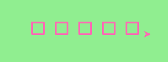

Question 1: Use the draw_square function we wrote in this chapter to draw the image shown below. Assume each side is 20 units.
(Hint: notice that the turtle has already moved away from the ending point of the last square when the program ends.)
Question 2: Write a program to draw this. Assume the innermost square is 20 units per side and each successive square is 20 units bigger, per side, than the one inside it.

Question 3: Write a non-fruitful function draw_poly(t, sides, side_length) which makes a turtle draw a regular polygon. When called with draw_poly(tess, 8, 50), it will draw a shape like this:

Question 4: The two spirals in this picture differ only by the turn angle. Draw both.
Note: Because this program might receive a TimeLimitError we’ve added some code to our answer to make the turtle go faster (use its speed method) and to increase the time the program is allowed to run to 35 seconds. You can do the latter in your code using:
import sys
sys.setExecutionLimit(35000)

Question 5: Write a non-fruitful function draw_equi_triangle(turtle, size) which calls draw_poly from the question above to have its turtle draw an equilateral triangle.
Question 6: Write a fruitful function sum_to(n) that returns the sum of all integer numbers up to and including n. So sum_to(10) would be 1+2+3...+10 which would return the value 55. Use the equation (n * (n + 1)) / 2.
Question 7: Write a non-fruitful function to draw a five pointed star, where the length of each side is 100 units.

Question 8: Extend your program above. Draw five stars, but between each, pick up the pen, move forward by 350 units, turn right by 144, put the pen down, and draw the next star. You’ll get something like this (note that you will need to move to the left before drawing your first star in order to fit everything in the window):

What would it look like if you didn’t pick up the pen?
Question 9: Extend the star function to draw an n pointed star. (Hint: n must be an odd number greater or equal to 3).
Question 10: Write a function called draw_sprite that will draw a sprite. The function will need parameters for the turtle, the number of legs, and the length of the legs. Invoke the function to create a sprite with 15 legs of length 120.
Question 11: Rewrite the function sum_to(n) that returns the sum of all integer numbers up to and including n. This time use the accumulator pattern.
Question 12: Write a function called fancy_square that will draw a square with fancy corners (sprites on the corners). You should implement and use the draw_sprite function from above.
Once you have finished check here to see our answers. Keep in mind that there is often more than one way to solve a problem and just because your solution may look different than ours doesn’t mean yours is wrong.
Write a function area_of_circle(r) which returns the area of a circle of radius r
As a refresher, the area of any circle is equal to the radius squared, multiplied by pi (where pi is 3.14159….).
Don’t forget to include the math module, where pi is defined.
# TODO: use def to define a function called area_of_circle which takes an argument called r
# TODO implement your function to return the area of a circle whose radius is r
# Below are some tests which can give you an indication that your code seems to be correct.
# IMPORTANT: You should NOT include this part when you submit in Vocareum.
# When you submit, only include the function above.
from test import testEqual
t = area_of_circle(0)
testEqual(t, 0)
t = area_of_circle(1)
testEqual(t,math.pi)
t = area_of_circle(100)
testEqual(t, 31415.926535897932)
t = area_of_circle(-1)
testEqual(t, math.pi)
t = area_of_circle(-5)
testEqual(t, 25 * math.pi)
t = area_of_circle(2.3)
testEqual(t, 16.61902513749)